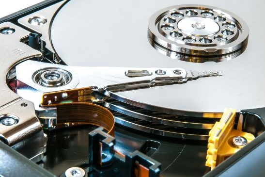
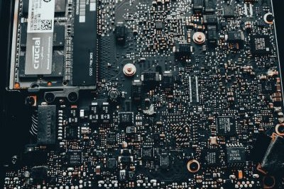

Motherboard - Functions
7 Functions of a Motherboard
1. Manages data flow
The BIOS component of the motherboard ensures that the operating system interacts well with input and output devices, such as the keyboard and mouse, to process instructions. This ensures that the data sent to the computer moves as expected to perform the intended purpose. It also manages data flow through its USB ports, allowing for data transfer between devices. Additionally, it ensures the processor can access information from the RAM to boost efficiency.
2. Conserves resources
The motherboard saves consumers time, energy, and money by connecting all the computer connects. The motherboard provides a platform on which manufacturers can connect all the necessary components to ensure that the computer functions. Thus, saving consumers’ time and energy as they do not have to assemble and connect different parts manually. Moreover, collecting the individual components can prove costly as consumers would be forced to incur additional transport and other miscellaneous costs.
3. Optimizes power distribution
The motherboard provides and distributes power optimally. Computers require electricity to function. The motherboard has a power connector plug that connects the computer to a power source and converts it into a form of electrical power that the computer can use. After that, the motherboard ensures that the electric current is distributed optimally to different system components.
The motherboard has an integrated circuit technology with pre-defined connections that ensure each element gets the necessary power. Moreover, the circuits ensure less energy is consumed to make the computer an energy-efficient machine.
4. Drives communication
The motherboard makes communication between different components easier. For a computer to process a particular set of instructions, sometimes it may require several components to communicate and work together to complete the task. In such scenarios, the motherboard relies on its circuit technology to enable communication between these components. The motherboard may also depend on some of its components, such as the CPU, BIOS, expansion ports, and USB ports, to interact with the computer’s operating system.
5. Enhances performance
The motherboard boosts the capabilities of a computer. Motherboards often transform the capabilities of a computer. For instance, they have additional features and functionalities, such as built-in sound and video capabilities that can enhance the computer’s output. Motherboards also allow users to connect peripheral devices such as printers, enabling computers to perform additional tasks such as printing documents. Additionally, users can expand and upgrade factory-made motherboard parts such as memory slots or hard disks to boost the capabilities of their computers.
6. Improves reliability
A good motherboard boosts the overall reliability of the computer. A high-quality motherboard provides a stable foundation for its components to operate on. A good motherboard has proper cooling, and its integrated circuit technology is set in place. These factors enable it to control the computer’s hardware efficiently by ensuring that each element functions as expected and communicates with the other components. A reliable computer performs tasks efficiently and thus enhances the user experience.
7. Enables productivity
The motherboard reduces effort duplication and simplifies work for computer users. While traditional computers came pre-installed with BIOS, modern ones are pre-installed with EFI and UEFI. BIOS, EFI, and UEFI enable computers to boot without requiring users to reconfigure basic settings, time, and date. They also load the operating system into the memory. Therefore, these motherboard components allow users to focus on other productive tasks.


What Else Do Manufacturers Add?
Though motherboard manufacturers don’t create their own chipsets, they make countless decisions involving manufacturing, aesthetics, and layout, as well as cooling, BIOS features, Windows motherboard software, and premium features. While the range of these features is too wide to fully cover, common additions fall into a few general categories.
Overclocking
High-end motherboards often provide automated testing and tuning to overclock your CPU, GPU, and memory, providing an easy-to-use alternative to manual adjustment of frequency and voltage numbers in the UEFI environment. They may also feature an onboard clock generator for fine control of CPU speed, an enhanced VRM (Voltage Regulator Module), extra thermal sensors near overclocked components, and even physical buttons on the motherboard to start and stop overclocking. You can learn more about overclocking your PC here.
Cooling
Motherboard components such as the PCH and VRM generate significant heat. To keep them at safe operating temperatures and prevent performance throttling, motherboard manufacturers install a variety of cooling solutions. These range from the passive cooling provided by heatsinks to active solutions, such as small fans or integrated water cooling.
Active and passive cooling
Active cooling solutions have moving parts, like the pump in a water cooler or a spinning fan. Passive cooling solutions, like heat sinks, work without moving parts. The latter are sometimes preferred in rugged conditions, where active solutions may have a shorter lifespan, or when lower acoustics are preferred.
Software
Motherboard software suites make it easier to manage your motherboard within Windows. Feature sets vary between manufacturers, but the software may scan for outdated drivers, automatically monitor temperatures, safely update the motherboard BIOS, allow easy adjustment of fan speeds, offer more in-depth power-saving profiles than Windows* 10, or even track network traffic.
Audio
Advanced audio codecs, built-in amplifiers, and enhanced capacitors can improve the output of onboard audio systems. Different audio channels may also be separated in different layers of the PCB to avoid signal interference